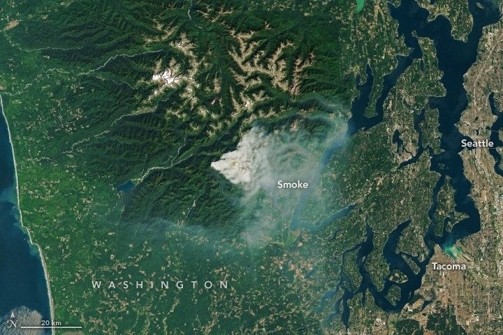

Fire Burns Through Olympic Wilderness
A wildland fire has burned for more than a month on the Olympic Peninsula in Washington state, consuming thousands of acres of forest and advancing into Olympic National Park. Since it was first reported on July 6, the Bear Gulch fire has grown amid warm and dry weather that has primed vegetation to burn. The peninsula’s rugged terrain has also hampered firefighting efforts.
A thick smoke plume emanating from the blaze is visible in these images, acquired with the OLI (Operational Land Imager) on Landsat 8 on August 12 at about noon local time (19:00 Universal Time). On that day, smoke reached a height of nearly 30,000 feet (9 kilometers) because of “significant fuel consumption” and unstable atmospheric conditions, according to an update from fire managers.
A satellite image shows mountainous terrain with a plume of smoke blowing east in a V shape. The smoke appears to concentrate in the valleys.
The fire grew by about 1,200 acres in a 24-hour period starting August 12, expanding to 7,390 acres (2,990 hectares). Temperatures soared across the region; a high of 93 degrees Fahrenheit (34 degrees Celsius) was measured that day at the National Weather Service forecast office in Seattle, tying the daily record set in 1977.
In addition to hot, dry weather, drought-parched vegetation has aided the fire’s rapid growth in preceding weeks. Flames moved into the forest canopy in some areas and spread with the help of hanging moss, according to news reports. Fire also burned through moss on rock outcrops that might have otherwise served as natural firebreaks.
The Staircase area of Olympic National Park, as well as trails and campgrounds in the adjacent Olympic National Forest and Mount Skokomish Wilderness Area, remained closed as of August 14. So far, no structures have been reported as damaged.